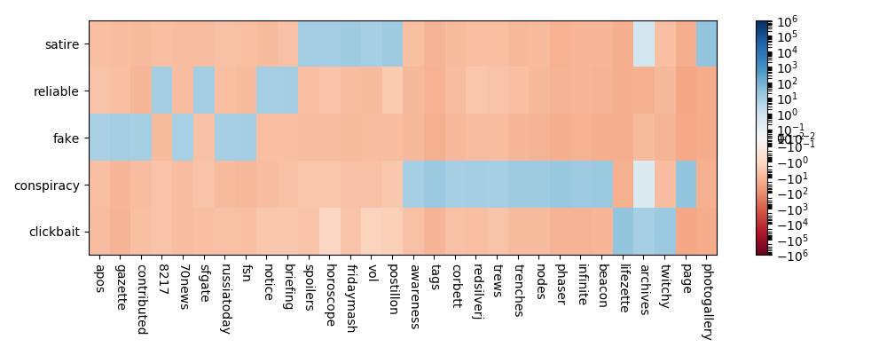

Investigating the Similarities Between Satire and Misleading News Headlines
An investigation on the similarities between satire and reliable news headlines, and how they can help determine the strategies used in other forms of misleading or fake news.
TL;DR Using the Fake News Corpus dataset, I created a logistic regression model to differentiate between reliable and satire news headlines. This model demonstrated that conspiracy and clickbait headlines tend to be more similar to satire than reliable headlines. This is likely due to the tendency of reliable news to talk about events, while the other types focus on opinions and general topics.
While humans are fairly adept at recognizing sarcasm from seriousness, the prevalence of fake news and outlandish headlines have been making it much harder to determine what is real in the media. In this article we will attempt to create a model to differentiate between real and satire news headline text. We can also apply this model to various other types of news to investigate whether the text and writing is more similar to that of reliable or satire news. This article will explore conspiracy, clickbait and fake news. All of these types of news attempt to pass themselves off as reliable news in order to either gain more traffic on their sites or possibly further a political agenda. While the goal is for the headlines to be interpretted a real, the contents tend to be more outlandish and sensational, which is more simialr to satire. By comparing the contents of each type to the reliable and satire news, we can find out whether the headlines are crafted realistically enough to pass as reliable news, or if the content itself will give it away as not being real. Then, we can analyze the content of each type of headline to see what words lend themselves to being classified a certain way. Examining these yields that the topics of reliable news uses terms related to current events in an informative way while satire and misleading news refer to opinions about pop culture and politics in an incomplete or trivial way.
Obtaining and Cleaning the Data
I decided to use the open source dataset Fake News Corpus github repo available here to provide the satire and credible news headlines. The dataset itself consists of over 6 million articlesTo be more precise, there are 8,247,542 articles represented classifiedThe original source used http://www.opensources.co/ to classify each domain, but this site has since closed down. into different types such as credible, satire, fake news, and so on. It is important to note that the data is classified into each type based solely off the domain of the article rather than the content article itself. In order to make this data easier to work with, I cleaned the raw csv to eliminate unnecessary columns, non-ascii characters, and rows with types that did not fall into the categories outlined by the original corpus.
To get a better idea of where our news is coming from, let's explore the domains under the credible and the satire types. In the original dataset, the domain names were expressed as the news site they were scraped from, and thus included url extensions. To standardize the domain names, I eliminated punctuation and stop wordsThe complete list of stopwords used: ["com", "www", "org", "co", "uk", "aus", "domain", "columns", "rows", "au", "af", "ca", "go", "de", "in", "nz", "m", "net"]. After doing this, we can better visualize the domains classified as reliable news and satire news and their relative frequenciesThe distribution of these sites is very skewed, with the most common sites appearing exponentially more often than the others. Note the scale of the plots, as well as the difference in size between the reliable and the satire news. There are roughly 1,920,139 reliable news and 146,080 satire articles represented..


Fig. 1 Bar plots demonstrating the domains of the satire news (right) and reliable news (left).
Most of these sources should be recognizable, and all have a significant web presence. We can see that the reliable news sites have a variety of specialties, from financial news to sports news to current events. Note that in the original dataset news classified as political or biased are in their own categories, meaning that all of the domains represented are more or less non partisan, and are not trying to serve a certain agenda. This will help us to create a model that will not be skewed towards certain political beliefs or persuasive techniques. The satire news domains are all strictly satire news, and could be on a variety of topics. We definitely have a lot of political headlines present, and most are not trying to promote an idealogy as much as poke fun. Now that we have a better idea of what data we are working with, we can begin training a model.
Creating and Adjusting a Model
So, let's create a classifier to determine whether an article is reliable or satirical. I used the SciKitLearn Count Vectorizerdocumentation found here to create a bag of words model for our data. I also split the data into test and training sets stratified by type. By doing this, we retain the proportions of satire and reliable news represented in the test and training datasets. This will prevent us from having a training dataset entirely compromised of one type of news, skewing the model. Finally, I constructed a logistic regression modelbuilt with SciKit Learn, documentation found here To visualize the accuracy of the model I created a confusion matrixfurther information and documentation found here to demonstrate what each observation in the test set is being classified as.

Fig. 2 Confusion matrix of the entire dataset demonstrating high accuracy
This figure shows us how our model is performing in classifying reliable news and satire news. Looking at this, we see a fairly high accuracy rate. while this is promising, looking a bit closer we see that the satire data has a very high false negative rate. Roughly 60% of our satire data is being misclassified. This is becuase the satire data is being clobbered by the real news data as there is significantly more reliable news data than satire. In fact, if we were to classify all headlines as credible news, we would see an accuracy of .95! This is not quite what we wanted, since we are trying to classify articles based off of their headline text content rather than pure probability. So, in order to better understand the problem let's examine a Receiver Operating Characteristic Curve (ROC Curve). The ROC Curve will show us the performance of this logistic regression model as our discrimination threshold is varied. It will compare the true positive rate with the false positive rateMore information and documentation found here. Note that a model with perfect accuracy will have the area under the curve be exactly one.
Fig.3 ROC curve demonstrating the low true positive rate implicit in our data.
The area under the ROC curve is very large, indicating our model is very accurate. However, as we noticed this is because we tend to have a lot of false negatives classifying satire news as real news. If we were to actually implement this in order to discern real and satire news articles this would be problematic, so lets try and shift along the ROC curve to an area with lower false negative rates. We are trying to make a model that can discern between reliable and satire news based off of how they are written rather the actual frequencies of reliable versus satire news. Even though there are many more reliable news headlines both in this dataset and the real world, we want to ensure that we are solely classifying based off of the text content of the title rather than these outside factors. This will create a model that will be more effective at classifying both satire and reliable news in general, rather than when we have significantly more real news than satire. We will need to sacrifice some accuracy and true positive rates to change this. So, I attemped to create a new reliable news dataset using a stratified sample from our total data by domainThis processing will essentially be lowering the number of values in our dataset, n, and thus will increase estimation error and generalization error. While it is not ideal to be raising error, we do want to lower our approximation error created by simply assuming a lot of the satire articles are actually reliable.. I sampled the data to have equal amounts of real and satire news. Then we can create a new logistic regression model that wil hopefully be more effective at classifying satire news headlines. We get a confusion matrix as such:

Fig.4 Confusion matrix for a smaller real news population.
While this model is significantly less accurate than the one above, we do see a better false negative rate. More than 80% of our satire articles are being classified correctly. However, we do see a larger false positive rate, with roughly 15% of reliable news headlines being classified as satire news. This is acceptable, as we do see the majority of both reliable and satire news being classified correctly, which was not the case in our previous model with all of the data.
Now, we will use this model on some of the other types and see which ones get classified as satire versus real news. I decided to focus on conspiracy news, fake news, and clickbait news as these types tend to have the most outlandish headlines that attempt to pass as credible news yet in reality are not. I would like to see whether these different types of news are classified as being more similar to satire news headlines or credible news headlines by seeing how the headlines from my dataset get classified.
Trying the Model on Conspiracy, Fake, and Clickbait News
Our dataset has about 905,981 conspiracy articles, 928,083 fake news articles and 292,201 clickbait articles represented. After cleaning them and vectorizing them in the same way as the satire and reliable news, we can run them through the classified constructed above to see what label the data will get assigned. It is important to note that while it is pretty straightforward to distinguish between reliable news and satire (one is comedic, one is not), there is a much fuzzier line between fake, conspiracy and clickbait. What makes conspiracy different from fake news? While our data comes pre-classified in each category, we do not know a lot of the methods used to carry out this classification. Hopefully by invetsigating the relationships betwen these types and their respective titles we can possibly gain more insight into the specific differences between each, and whether we can conclude anything about similarities as well. It will be important to interpret the results of this investigation in the context of not just media in general but the specific context of this dataset.
As we can see, every classification of headline is predicted to be satire news more often than reliable news. While conspiracy news and clickbait news have a much higher rate of classification as satire news, fake news is more even. This is likely because the conspiracy and clickbait headlines are much more outlandish in their content, unlike the real news which reports on more than just sensationalist stories, but focusses on even mundane news. Fake news is often aimed to be more simliar to real news, as the entire point is usually to convince readers that the false information being communicated is true.
While this is more or less expected, we cannot conclusively say that this rule must hold for all news of these types. It is hard to definitively differentiate between conspiracy and fake news, which begs the question of how our dataset may be assigning these types. In order to understand if we are looking at a trend in a particular dataset or a trend that may carry over into other headlines not represented here, lets analyze further into what the titles themselves actually contain. Taking a closer look at the content of the titles, we can see what sorts of words in the title create a stronger case for an article being in one of these categories. In order to create a way to compare across these five types, I created a new logistic regression model to predict all five classificationsDone using the same method as above. The visualization below shows us how the logistic regression model ranks each word, and the amount of weight it has in classifying a title with said word into one of the five categories. A blue box indicates that a word is commonly found in titles of articles of that type, while a red box indicates a word is never found in titles of that type. Thus, by looking at the blue boxes for each category we can see what types of words are more likely to sway a classification towards a given type. This will help us better justify the similarities between the satire and the misleading news types.

Unfortunately, it looks like we have a lot of very niche words represented. Most words are only relevant for one type and extremely irrelevant to the rest Quite a few are domain names that got scraped along with the title (70news, sfgate, ...), but we do see some insight into the possible structure of articles, or what they are talking about quite often. We see some very unique words for each category such as horoscopes for satire, briefings for reliable, and phasers for conspiracy. We also see that the structure of articles themselves yield for certain classifications. The structure of satire, clickbait and conspiracy are fairly similar, as they tend to prefer advertising photogalleries and archives. The presence of these words in the title do not reveal anything about how the content of the article itself may be related to one of these categories, and is a feature of the scraping tools used. It is unsurprising that a tool that captures the domain of a site will associate that with a given type. However, the words that could yield the strongest conclusions are briefing and notice, as they are very prevalent in reliable news and not so much in others. These words are used for specific events, while we do not see that sort of word in the other type's strong words. Conspiracy favors more outlandish words as well as words attempting to convey a specific idealogy like awareness. Overall, it is hard to draw a definitive conclusion of what words lend themselves to each kind of news given the nature of the dataset itself, and the imperfections in scraping the titles. However, I think one of the major differences that would appear more prevalently given more cleaning of the data would be that reliable news tends to focus on actual events that have transpired while the other forms are less focussed and discuss ideas and opinions over what is happening.
Conclusion and Further Development
Overall, from this analysis we can say with some degree of certainty that conspiracy, fake, and clickbait news headlines tend to be more similar to satire news. The reasons for this are likely due to the similar nature of the news itself, as well as the content of headlines not focussing on specific events. Reliable news reports on what is happening in the world, while satire and misleading news focus on culture and opinion in a way to entice viewers and intrigue. It is also likely that reliable news headlines convey more facts than satire and the others, as the very motivation of reliable news is to inform while other sites simply want more clicks and traffic. In a further examination on this topic I would like to look further into ways to tune the initial classifier to be more accurate, since it has a fairly high error rate. The results could be due to variability, or some other hidden factors I have not considered. I would also like to try and clean the title data further, removing domain names and other words that confuse the classifier in order to better understand what words lend themselves to which type in a more conclusive way. Additionally, it would be interesting to investigate other datasets, and determine whether the same patterns hold on the news headlines represented there.